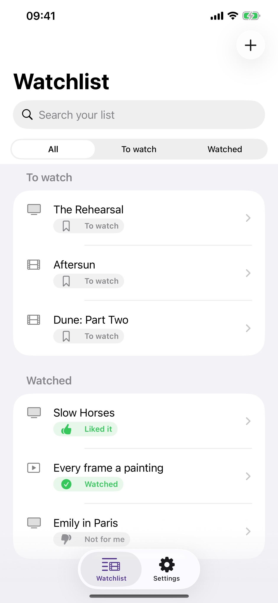
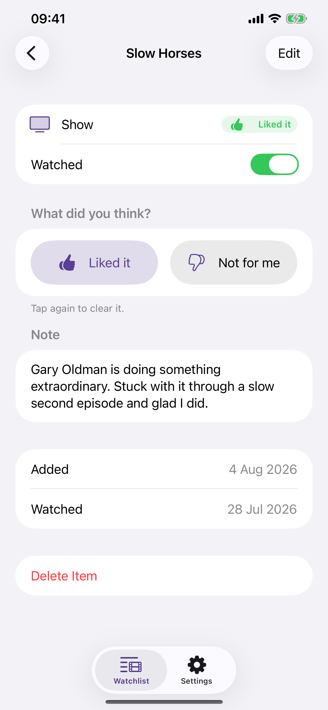
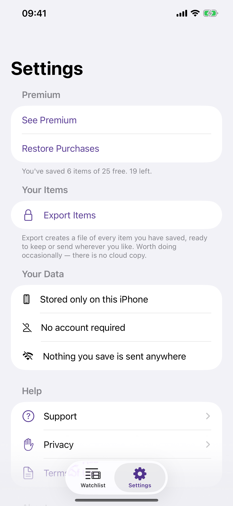

Every show, film and video you mean to watch — and what you thought of it once you have.
Someone recommends a show over dinner. It goes into Notes, or a screenshot, or a message thread, or nowhere. Three weeks later there is a free evening, and all you can remember is that there was something.
Simple Watchlist is one list for the shows, films and videos you mean to get to — and a line about what you thought, for the version of you who has forgotten by next year.



No account. No sign-in. No server. The app makes no network requests of its own, so it behaves identically in aeroplane mode. No analytics, no advertising, no tracking, and no third-party code of any kind. Your list is on your iPhone and in your own backups, and nowhere else.
It will not look titles up for you. Every free catalogue misses most streaming originals, and a search that fails on the show you actually want teaches you not to trust the field — so you type the name, which takes about three seconds and always works.
It has no star ratings, does not track episodes, and does not tell you where something is streaming. It is a small app that does one thing.
Free: up to 25 items, with ticking off, thumbs up and down, notes, search, filtering and reminders on every one of them.
Premium: an unlimited list, reminders on your own schedule, and export of everything as a spreadsheet. If you ever stop paying, nothing you saved is hidden, locked or deleted — only adding something new is affected.